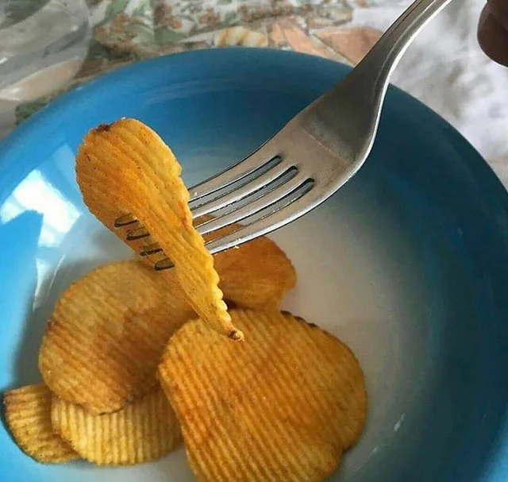

Sad Batchelor Cereal Surprise

For those days when you just give up on cooking.
Ingredients
- For those days when you just give up on cooking.
- 2 cups of flat soda
- 1 leftover slice of pizza
- ½ cup of peanut butter (because why not?)
- Optional: a handful of crushed pretzels for texture
Instructions:
- Pour the flat soda into a bowl (this is your "milk").
- Crush the stale chips into the bowl.
- Tear up the pizza slice and toss it in like cereal.
- Add a scoop of peanut butter on top like it’s gourmet.
- Stir aggressively while questioning your life choices.
- Eat directly from the bowl while sitting on the floor.
Pairs with:
Existential dread and regret.